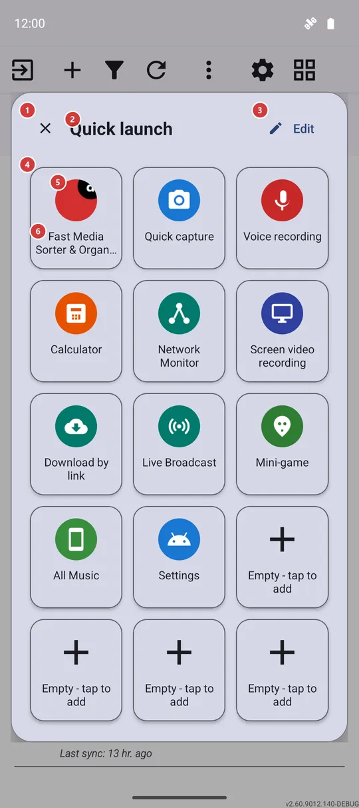
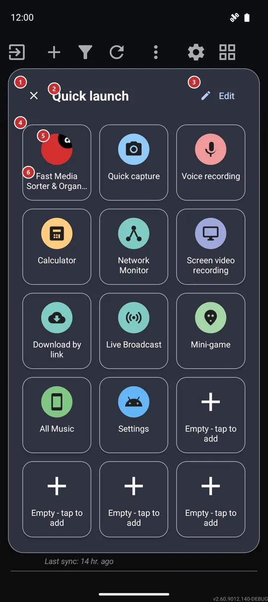

Quick launch
What this is for
Quick launch is a pop-up grid of fifteen tiles that opens over whatever you are doing. One tap starts an app, a tool of FastMediaSorter, one of your resources or an Android settings screen, and the panel closes.


In this order
- Open the panel in one of three ways: the Quick Settings tile 7, an edge swipe 8 or the Programs menu 9.
- Tap a tile 5 to start what it points to. The panel closes by itself, so you land straight in the app or screen you picked.
- A dimmed tile with a plus 6 is a free place. Tap it to choose what goes there.
- Press Edit 3 to rearrange the panel, replace tiles or put it back to the factory set.
- Press Close 1, tap outside the panel or use Back to dismiss it without starting anything.
The elements
Panel header
1CloseCloses the panel and returns you to what you were doing.
The panel floats over the app that was on the screen, so closing it simply takes it away. Tapping outside the panel or pressing Back does the same.
2Quick launchNames the panel.
Quick launch is the name of the panel here, on the Quick Settings tile and in the Programs menu, so you recognize it wherever you open it from.
3EditOpens the screen where you choose what is on the panel.
The Edit panel screen lets you fill a free place, replace a tile, move it, remove it or reset the panel to the factory set. Your changes show on the panel at once when you come back.
Tile grid
4Tile gridFifteen fixed places for your shortcuts.
The grid always has fifteen places: three columns in a narrow window and five in a wide one. You cannot add more places, but any of them can be filled, replaced, moved or emptied in Edit panel.
The first time the panel opens, the app fills it in for you: FastMediaSorter first, then its own tools that exist in your edition, one of your resources and the Android settings, with the last few places left free for your own apps.
Tiles
5TileStarts the app, tool, resource or settings screen it shows.
Tap a tile and the panel launches its target, then closes. A tile can point to an Android app, a FastMediaSorter tool such as the calculator, the mini-game, Streams or Favorites, one of your resources (it opens in the file browser) or an Android settings screen. If a tool is switched off in Settings, the tile opens the matching setting, where there is one, instead of doing nothing. A Wi-Fi or Bluetooth tile switches the radio right away in editions that can do it, and otherwise opens the matching Android screen. If a tile points to an app that has been removed, nothing opens and the panel just closes.
6Empty - tap to addA free place waiting for your shortcut.
The place is shown dimmed with a plus. Tapping it does not close the panel: it opens the Edit panel screen, where you choose what goes into that place.
Ways to open the panel
7Quick Settings tileA Quick launch tile in the Android quick settings.
Pull down the Android quick settings, tap its Edit button and drag the Quick launch tile in. Tapping the tile closes the shade and opens the panel over the app underneath. It is available in every edition on Android 7 and later, so it works even where edge swipes are not offered.
8Edge swipeA swipe from the screen edge opens the panel.
In the edge gesture settings, give one swipe direction the action Open quick-access panel. Edge gestures need the gesture overlay turned on in Settings and are offered in the Standard and noLegal editions; in these editions an upward swipe in the upper left band is already set to open the panel on first start. The panel then appears over the current app, with no screenshot and no extra prompts.
9Programs menuThe Quick launch entry of the main screen's programs.
On the main screen, Quick launch is always in the list of programs - there is no switch for it. You find the list in the programs panel, or under More actions when that panel is off. Choosing the entry opens the panel.